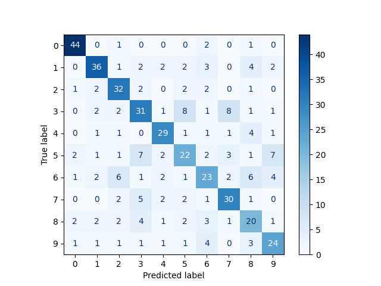

Note
Go to the end to download the full example code or to run this example in your browser via Binder
Fisher vector feature encoding#
A Fisher vector is an image feature encoding and quantization technique that can be seen as a soft or probabilistic version of the popular bag-of-visual-words or VLAD algorithms. Images are modelled using a visual vocabulary which is estimated using a K-mode Gaussian mixture model trained on low-level image features such as SIFT or ORB descriptors. The Fisher vector itself is a concatenation of the gradients of the Gaussian mixture model (GMM) with respect to its parameters - mixture weights, means, and covariance matrices.
In this example, we compute Fisher vectors for the digits dataset in scikit-learn, and train a classifier on these representations.
Please note that scikit-learn is required to run this example.

/opt/hostedtoolcache/Python/3.12.1/x64/lib/python3.12/site-packages/sklearn/svm/_classes.py:32: FutureWarning:
The default value of `dual` will change from `True` to `'auto'` in 1.5. Set the value of `dual` explicitly to suppress the warning.
precision recall f1-score support
0 0.86 0.92 0.89 48
1 0.77 0.69 0.73 52
2 0.65 0.76 0.70 42
3 0.58 0.56 0.57 55
4 0.72 0.74 0.73 39
5 0.54 0.46 0.49 48
6 0.55 0.48 0.51 48
7 0.67 0.70 0.68 43
8 0.48 0.53 0.50 38
9 0.60 0.65 0.62 37
accuracy 0.65 450
macro avg 0.64 0.65 0.64 450
weighted avg 0.64 0.65 0.64 450
from matplotlib import pyplot as plt
import numpy as np
from sklearn.datasets import load_digits
from sklearn.metrics import classification_report, ConfusionMatrixDisplay
from sklearn.model_selection import train_test_split
from sklearn.svm import LinearSVC
from skimage.transform import resize
from skimage.feature import fisher_vector, ORB, learn_gmm
data = load_digits()
images = data.images
targets = data.target
# Resize images so that ORB detects interest points for all images
images = np.array([resize(image, (80, 80)) for image in images])
# Compute ORB descriptors for each image
descriptors = []
for image in images:
detector_extractor = ORB(n_keypoints=5, harris_k=0.01)
detector_extractor.detect_and_extract(image)
descriptors.append(detector_extractor.descriptors.astype('float32'))
# Split the data into training and testing subsets
train_descriptors, test_descriptors, train_targets, test_targets = train_test_split(
descriptors, targets
)
# Train a K-mode GMM
k = 16
gmm = learn_gmm(train_descriptors, n_modes=k)
# Compute the Fisher vectors
training_fvs = np.array(
[fisher_vector(descriptor_mat, gmm) for descriptor_mat in train_descriptors]
)
testing_fvs = np.array(
[fisher_vector(descriptor_mat, gmm) for descriptor_mat in test_descriptors]
)
svm = LinearSVC().fit(training_fvs, train_targets)
predictions = svm.predict(testing_fvs)
print(classification_report(test_targets, predictions))
ConfusionMatrixDisplay.from_estimator(
svm,
testing_fvs,
test_targets,
cmap=plt.cm.Blues,
)
plt.show()
Total running time of the script: (0 minutes 45.723 seconds)